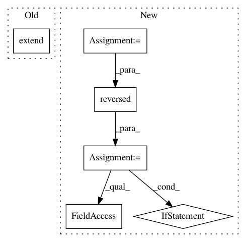

20c1bcdad47bfc6c0bdbdc510ee76598d64c380c,qiskit/aqua/components/uncertainty_models/univariate_distribution.py,UnivariateDistribution,build,#UnivariateDistribution#Any#Any#Any#Any#,77
Before Change
def build(self, qc, q, q_ancillas=None, params=None):
custom_state = Custom(self.num_target_qubits, state_vector=np.sqrt(self.probabilities))
qc.extend(custom_state.construct_circuit("circuit", q))
@staticmethod
def pdf_to_probabilities(pdf, low, high, num_values):
After Change
def build(self, qc, q, q_ancillas=None, params=None):
custom_state = Custom(self.num_target_qubits, state_vector=np.sqrt(self.probabilities))
custom_qc = custom_state.construct_circuit("circuit", q)
// remove all "resets" from circuit
for x in reversed(custom_qc.data):
if x[0].name == "reset":
custom_qc.data.remove(x)
qc.extend(custom_qc)
@staticmethod
def pdf_to_probabilities(pdf, low, high, num_values):
In pattern: SUPERPATTERN
Frequency: 3
Non-data size: 6
Instances
Project Name: Qiskit/qiskit-aqua
Commit Name: 20c1bcdad47bfc6c0bdbdc510ee76598d64c380c
Time: 2019-04-29
Author: stefan@swoerner.de
File Name: qiskit/aqua/components/uncertainty_models/univariate_distribution.py
Class Name: UnivariateDistribution
Method Name: build
Project Name: pantsbuild/pants
Commit Name: fac976efbc71aef758382015854f550c57d96461
Time: 2015-11-13
Author: tansy.arron@gmail.com
File Name: src/python/pants/backend/core/tasks/sorttargets.py
Class Name: SortTargets
Method Name: console_output
Project Name: Qiskit/qiskit-aqua
Commit Name: 20c1bcdad47bfc6c0bdbdc510ee76598d64c380c
Time: 2019-04-29
Author: stefan@swoerner.de
File Name: qiskit/aqua/components/uncertainty_models/multivariate_distribution.py
Class Name: MultivariateDistribution
Method Name: build